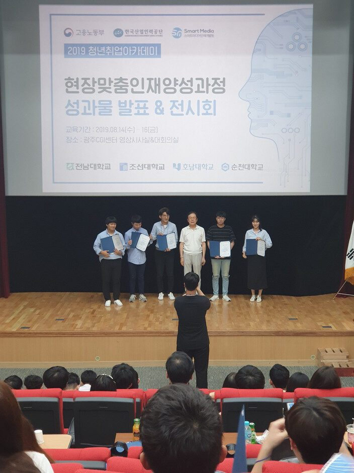

저는 조선대학교에서 경제학과에 4학년에 재학 중입니다.
단순 사무직이 싫었고, 어릴 적부터 프로그래밍을 해보고 싶었기 때문에 진로 변경의 출발점으로써 PBL 기반 빅데이터 분석 전문가 과정 단기(300시간) 교육에 참여하였습니다.
비전공자로서 당연히 기존에 프로그래밍에 대해 하나도 모르는 상태였지만, 매 수업 시간에 집중을 한 결과, 기초 문법부터 시작하여 전처리, 시각화, 머신러닝, 딥러닝 등의 일련의 과정을 따라가는 것에 대해 문제없었습니다.
또한 Kaggle 경진대회와 최종 프로젝트를 통해 코딩 능력과 팀워크 등을 기를 수 있었으며, 추가로 교육과정 외의 또 다른 공모전들까지 참여할 수 있었습니다.
만약 "비전공자라서 프로그래밍에 대해 하나도 모르는데 힘들지 않을까요?"라는 생각을 하고 계신다면, 저는 "흥미와 열정만 있다면 충분합니다."라고 답할 것입니다.
짧으면서도 긴 방학 기간을 더욱 알차게 보내고 싶으신 분들께 추천합니다.
